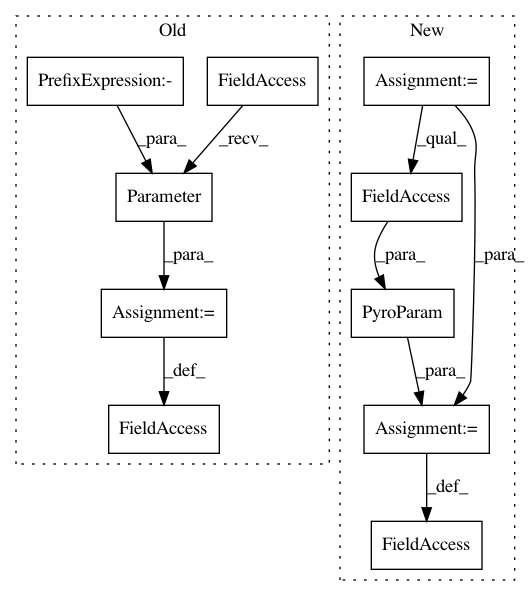

5184f1fc798a7728dd574ae9a351e16869d9ee7b,pyro/contrib/timeseries/lgssm.py,GenericLGSSM,__init__,#GenericLGSSM#Any#Any#Any#Any#,21
Before Change
self.state_dim = state_dim
if log_obs_noise_scale_init is None:
log_obs_noise_scale_init = -2.0 * torch.ones(obs_dim)
assert log_obs_noise_scale_init.shape == (obs_dim,)
super().__init__()
self.log_obs_noise_scale = nn.Parameter(log_obs_noise_scale_init)
self.log_trans_noise_scale_sq = nn.Parameter(torch.zeros(state_dim))
self.trans_matrix = nn.Parameter(torch.eye(state_dim) + 0.03 * torch.randn(state_dim, state_dim))
self.obs_matrix = nn.Parameter(0.3 * torch.randn(state_dim, obs_dim))
self.log_init_noise_scale_sq = nn.Parameter(torch.zeros(state_dim))
After Change
super().__init__()
self.obs_noise_scale = PyroParam(obs_noise_scale_init,
constraint=constraints.positive)
self.trans_noise_scale_sq = PyroParam(torch.ones(state_dim),
constraint=constraints.positive)
self.trans_matrix = nn.Parameter(torch.eye(state_dim) + 0.03 * torch.randn(state_dim, state_dim))
self.obs_matrix = nn.Parameter(0.3 * torch.randn(state_dim, obs_dim))
In pattern: SUPERPATTERN
Frequency: 4
Non-data size: 10
Instances
Project Name: uber/pyro
Commit Name: 5184f1fc798a7728dd574ae9a351e16869d9ee7b
Time: 2019-11-12
Author: martinjankowiak@users.noreply.github.com
File Name: pyro/contrib/timeseries/lgssm.py
Class Name: GenericLGSSM
Method Name: __init__
Project Name: uber/pyro
Commit Name: 5184f1fc798a7728dd574ae9a351e16869d9ee7b
Time: 2019-11-12
Author: martinjankowiak@users.noreply.github.com
File Name: pyro/contrib/timeseries/gp.py
Class Name: IndependentMaternGP
Method Name: __init__
Project Name: uber/pyro
Commit Name: 5184f1fc798a7728dd574ae9a351e16869d9ee7b
Time: 2019-11-12
Author: martinjankowiak@users.noreply.github.com
File Name: pyro/contrib/timeseries/lgssmgp.py
Class Name: GenericLGSSMWithGPNoiseModel
Method Name: __init__
Project Name: uber/pyro
Commit Name: 5184f1fc798a7728dd574ae9a351e16869d9ee7b
Time: 2019-11-12
Author: martinjankowiak@users.noreply.github.com
File Name: pyro/contrib/timeseries/gp.py
Class Name: LinearlyCoupledMaternGP
Method Name: __init__